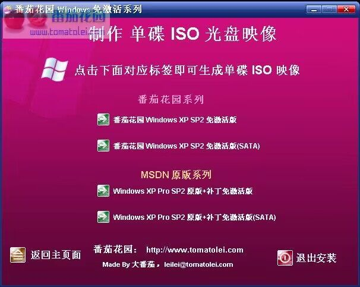

========================================================== === 番茄花园 Windows XP Pro SP2 免激活 2005 最终版 2.3 === ========================================================== CD KEY：DG8FV-B9TKY-FRT9J-6CRCC-XPQ4G 一、 软件介绍 本安装程序是ISO可启动映像文件，推荐下载以后直接用NERO 刻录映像文件,然后用光盘安装，当然也可以硬盘安装，DOS 下执行WINDOWS\TVOA(TVOB)\I386\winnt.bat即可。

一、 软件介绍
本安装程序是ISO可启动映像文件，推荐下载以后直接用NERO
刻录映像文件,然后用光盘安装，当然也可以硬盘安装，DOS
下执行WINDOWS\TVOA(TVOB)\I386\winnt.bat即可。
+ 添加 最新的 SATA 硬盘驱动，支持大多SATA硬盘
+ 添加 N 种最新主题，让你的 XP 充满个性化
+ 集合 到目前为止的所有 XP 关键补丁程序
+ 集合 最新 Windows Media Player 10
+ 集合 MS JAVA 虚拟机，支持163聊天室
+ 集合 Macromedia Flash Player 8 插件
+ 集合 微软的壁纸自动换
+ 集合 最新网络插件免疫程序，上网不再弹出插件安装提示
+ 集合 Yahoo搜索工具(支持大家番茄花园使用Yahoo搜索条)
+ 修改 其他一些优化及细节设置(详细见I386\SVCPACK\APP\FAST.REG)
+ 添加 TOOLS 目录，常用工具尽在其中
+ 添加 DONET 目录，需要使用.NET的朋友可以选择安装
+ 开启 自动更新
+ 开启 防火墙
- 关闭 系统还原
- 关闭 错误报告
- 删除 默认的壁纸
- 取消 桌面清理向导
三、WINDOWS目录中文件包说明
Windows XP Pro VOL SP2 原版系列(全部都集合补丁,未优化)
1. VOLA --- 原版SP2 + 最新补丁 + 自动安装
2. VOLB --- 原版SP2 + 最新补丁 + 自动安装 + SATA
番茄花园 Windows XP Pro VOL SP2 系列(全部都集合补丁及优化)
1. TVOA --- 番茄花园 WinXP Pro VOL SP2 + 自动安装
2. TVOB --- 番茄花园 WinXP Pro VOL SP2 + 自动安装 + SATA
四、安装说明
1.光盘安装(推荐)
请用刻录软件，选择 映像刻录 方式来刻录ISO文件，刻 录之前请先校验一下文件的准确性，刻录速度推荐24X！
a.自动安装 安装请设置光盘启动，然后选择第1个就可以自动安装！
b. 手动安装 安装请设置光盘启动，然后选择第2个就可以手动安装！
2. 硬盘安装(支持自动无人职守安装)
a.自动安装 请提取ISO中WINDOWS\TVOA(TVOB)\I386\winnt.bat 中的所有内容到硬盘，然后DOS下进入I386目录运行 winnt.bat就可以安装 。
a.自动安装 安装请设置光盘启动，然后选择第1个就可以自动安装！
b. 手动安装 请提取ISO中WINDOWS\TVOA(TVOB)\I386\winnt.exe 中的所有内容到硬盘，然后DOS下进入 I386目录 运行winnt.exe就可以安装 。安装之前需要先加载 smartdrv.exe(I386中有)
五、其他说明
2.3和2.2比较，主要是解决2.2对AMD+NF重起的问题，并且 SATA驱动按照2.1的格式，再对部分SATA更新一下。还有就 是2.3才用多合一系统，分为4个版本，2个番茄版，2个原版 ，并且可以生成4个版本的单独映像ISO全部都集合了最新的 补丁，可以选择SATA或非SATA版本，也可以选择番茄版和原 版，更可以选择自动安装或手动安装，另外补丁包单独打包 成WINDOWS\TVOA\I386\SVCPACK\APP\KBS.EXE，可以提取作 为装了原版以后的批量安装补丁包，还有就是优化方面多加 了几个，具体见I386\SVCPACK\APP\FAST.REG。由于修改SP2 连接数需要光盘不在才可以，所以SP2连接数没有修改，可以 自己打开TOOLS下的工具修改补丁更新到12-15。
番茄花园版都集合了Yahoo搜索条和易趣图标，是为了番茄花园 的发展而特别添加的，如果你不喜欢2个东西都可以在添加删除 程序里面完全可以卸载，或者选择装里面的原版系列，没有任 何其他信息，当然也可以不要下载和使用番茄花园系统！
番茄花园 2005-12-15